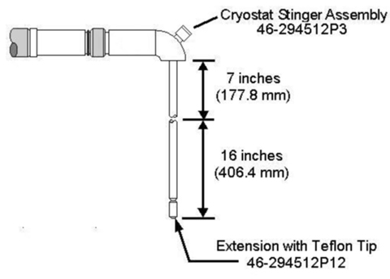

For a low-ceiling option site, use two 8 in. (203 mm) stinger extensions instead of the 16 in. (406 mm) stinger extensions.
Insert the 8 in. (203 mm) stinger extensions into the Magnet, and screw onto the 7 in. (178 mm) Cryostat Stinger Assembly (shown below) one at a time.
Illustration 4: Helium Bottom Fill Equipment
